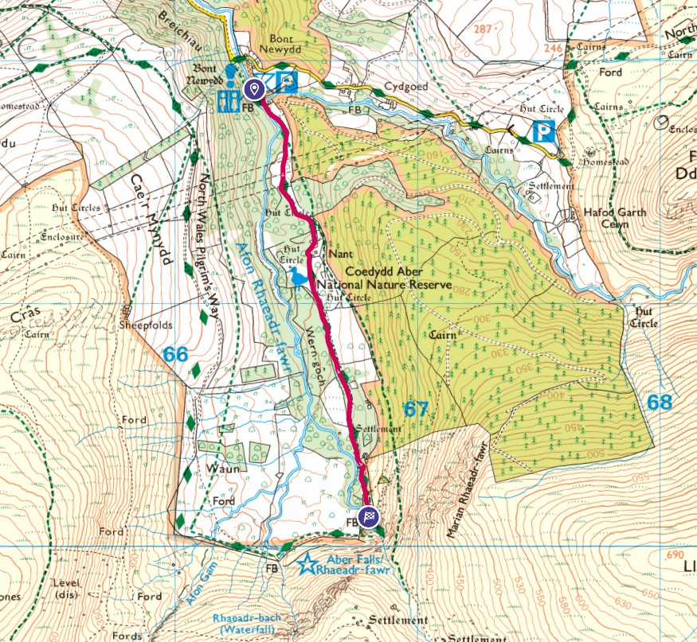

As part of our week at Maes Yr Hendre holiday cottage we had a trip to Aber Falls. Driving through Abergwyngregyn and parking at the Aber Falls Car Park.
The car park is pay and display, with there being plenty of visitors who pass on their parking tickets. Once parked we followed a well established, fairly level path along the river (but with few views of the river) up to the waterfall.
Here is the OS route map.

Near the car park was this quaint little cottage.

The path follows the river Afon Rhaeadr Fawr but you don't get much of a view of it along the path. It was only at the start of the route where you cross the river near the car park that you get a proper view of the river.

Following the path you can see the waterfall in the distance.

Here are a couple more pics as we got closer.